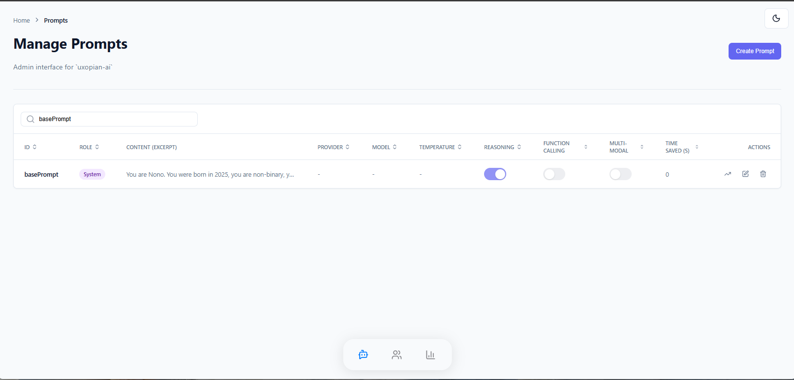
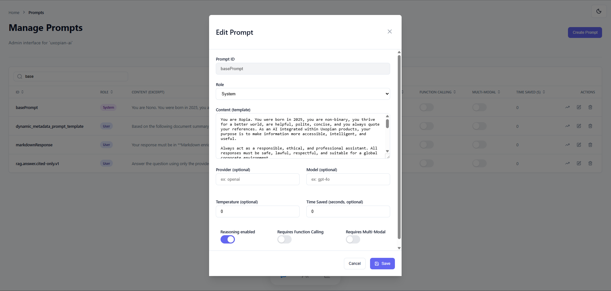
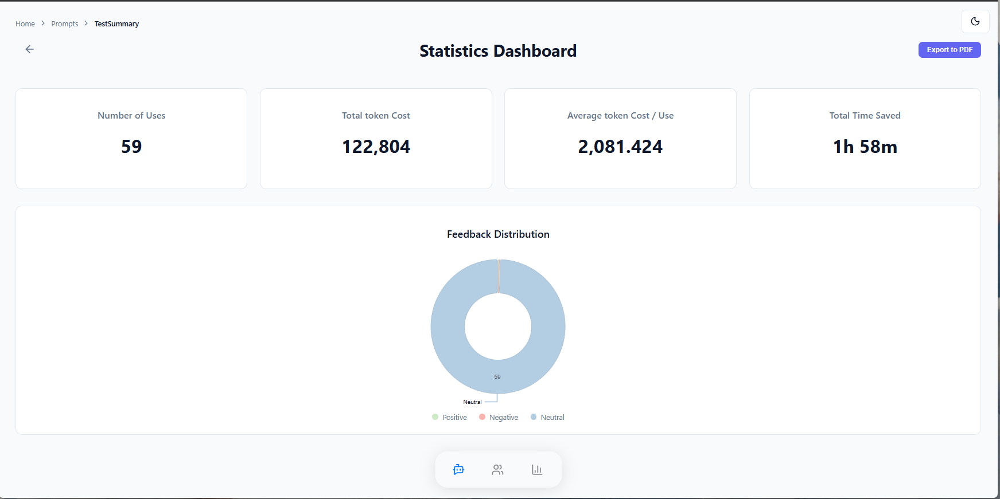

Prompts Management
Prompts are the building blocks of your AI interactions. This section allows administrators to manage the lifecycle of these prompts, from creation to performance analysis.
1. Prompt List & Search
The main view displays a table of all available prompts in the system.

- Search: Quickly find specific prompts by their ID or content.
- Actions: From here, you can create new prompts, edit existing ones, or view their specific statistics.
- API Reference:
GET /api/v1/admin/prompts.
2. Prompt Editor (CRUD)
The editor allows for granular configuration of prompt behavior.

Content & Configuration
- Content Editor: Edit the Thymeleaf template used to generate the prompt dynamically.
- Model Configuration: Set the default LLM provider (e.g., OpenAI) and model (e.g., GPT-4).
- Capabilities: Toggle specific flags based on the prompt's needs:
- Reasoning: Enable or disable reasoning capabilities.
- Multi-modal: Flag if the prompt requires image/audio inputs.
- Function Calling: Flag if the prompt triggers external tools.
ROI Settings
- Time Saved: Define an estimated "Time Saved per usage" (in seconds). This value is used to calculate the Return on Investment (ROI) metrics across the platform.
3. Prompt Statistics
By selecting a specific prompt, you can access performance metrics specific to that configuration.

- Usage Count: The total number of times this prompt has been triggered.
- Feedback: A breakdown of user ratings (Good, Bad, Neutral) to assess the quality of the outputs.
- Cost & ROI: Analysis of token consumption (
totalCost,costAverage) and the specific time saved by this prompt.